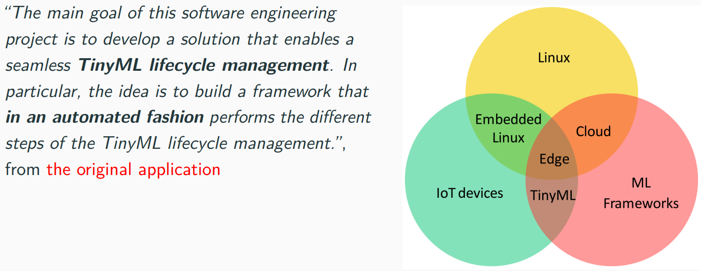
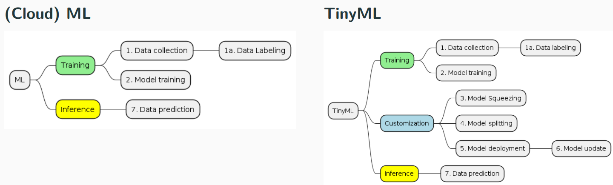
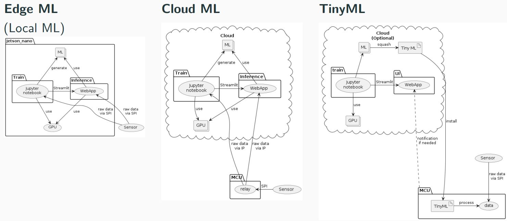
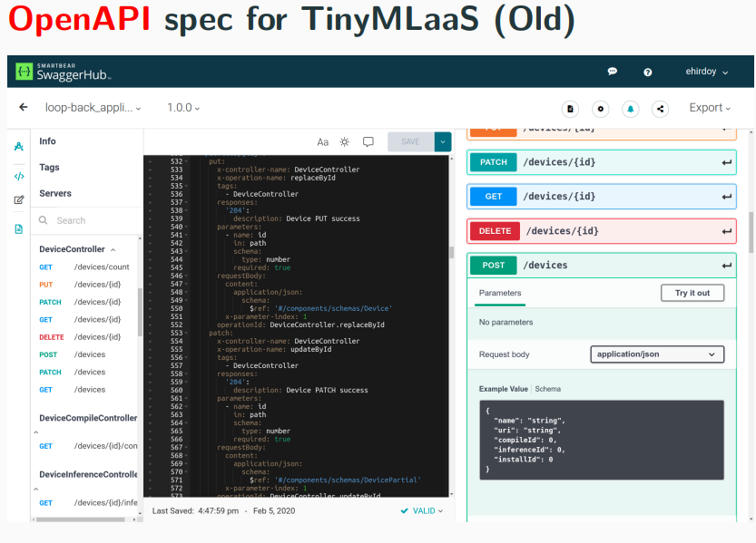
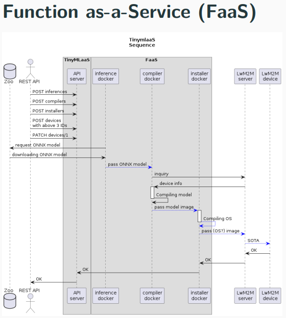
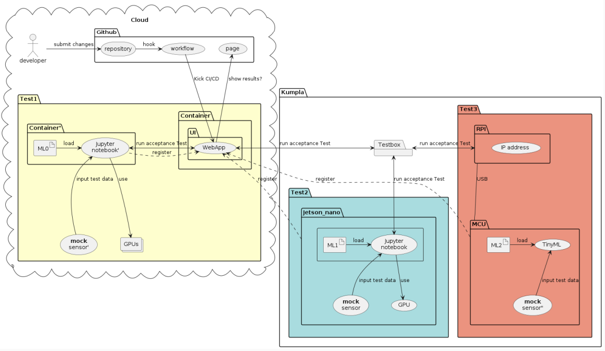
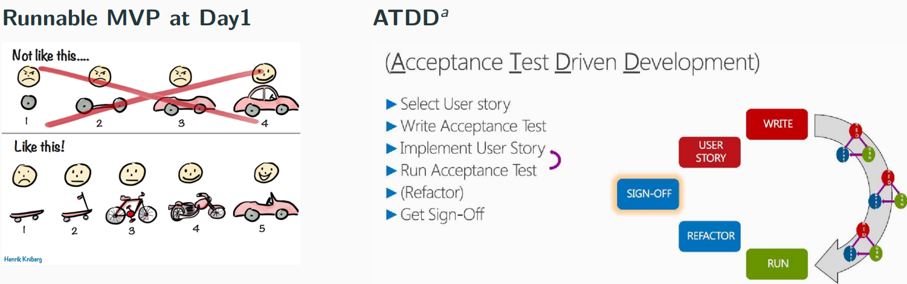

Introduction of this project
- On 15/05/2023
- Duration: 7 weeks, week20-26 (Ends at 30th June?)

     
Goal for this summer
Right now there’s no clear boundary between UI and its backend. We want to make them separted. The current Streamlit UI should be a pure frontend. The backend logic should be a REST backend server (e.g. fast API) Finall we want a CLI tool to control in additon to the current UI. A CLI tool should do the exact same things as the UI does right now.
$ tmlaas device list
<list device name>
$ tmlaas model list
<list device name>
$ tmlass device=<device id> install model=<model id>You may want to refer to this project as CLI example, https://ghapi.fast.ai/
Development envrionment
- SCRUM, User story mapping to set common goals with all stakeholders.
- Nbdev, Jupyter notebook framework for code, (unit)tests & doc at once, Nbdev tutorial video.
- Docker compose to run the whole system at once, turorial video.
- Acceptance Test Driven Development (ATDD) to sync up with a client.
- Streamlit for UI framework used in this project.
- GH Project as Kanban
- GH Workflow as CI/CD
Communication
- Discord, Click to join.
Next
- Who’s SCRUM master for Sprint1?
- Sprint1 (Week20)
- Initial research of this project by Students
- Sprint1 review & planning at 10:00AM 22nd May
- Review WoW proposal from students
- Q&A for a client
- Prioritize user story?
- Which Kanban board to share with customer?